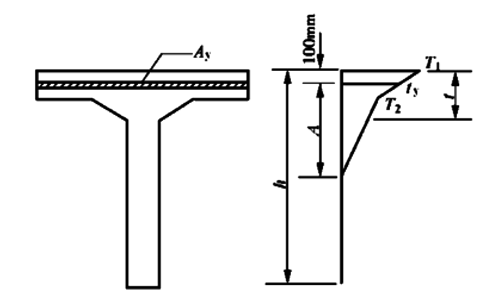

附录D 温差作用效应计算公式
附录D 温差作用效应计算公式

图 D.0.1 温差计算
D.0.1 简支梁温差应力按下列公式计算
$$ N_{\mathrm{t} }=\sum A_{\mathrm{y}}t_{\mathrm{y}}\alpha _{\mathrm{c}}E_{\mathrm{c}}\tag{D.0.1-1}$$ $$M^{0}_{\mathrm{t} }=-\sum A_{\mathrm{y}}t_{\mathrm{y}}\alpha _{\mathrm{c}}E_{\mathrm{c}}e_{\mathrm{y} }\tag{D.0.1-2}$$
1)正温差应力
$$\sigma _{\mathrm{t} }=\dfrac{-N_{\mathrm{t} }}{A_{0}}+\dfrac{M^{0}_{\mathrm{t} }}{I_{0}}\mathrm{y} +t_{\mathrm{y}}\alpha _{\mathrm{c}}E_{\mathrm{c}}\tag{D.0.1-3}$$
2)反温差应力，公式(D.0.1-1)、公式(D.0.1-2)、公式(D.0.1-3)内取负值，按公式(D.0.1-3)计算。
| 式中: | —— | 截面内的单元面积； | |
| —— | 单元面积内温差梯度平均值，均以正值代入； | ||
| —— | 混凝土线膨胀系数，按《公路桥涵设计通用规范》JTG D60的规定采用； | ||
| —— | 混凝土弹性模量； | ||
| y | —— | 计算应力点至换算截面重心轴的距离，重心轴以上取正值，以下取负值； | |
| —— | 单元面积重心至换算截面重心轴的距离，重心轴以上取正值，以下取负值； | ||
| —— | 换算截面面积和惯性矩。 | ||
D.0.2 连续梁温差应力尚应计入温度作用次弯矩，此时公式(D.0.1-3)右边第2项内弯矩应改以代之。
\(\ \)